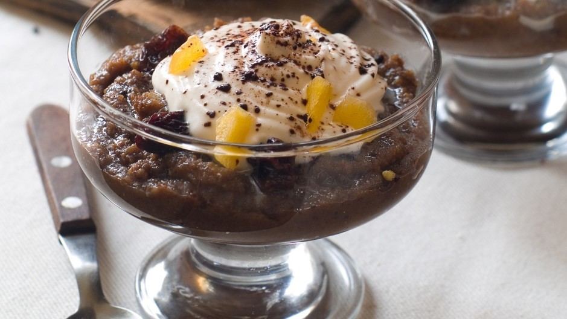
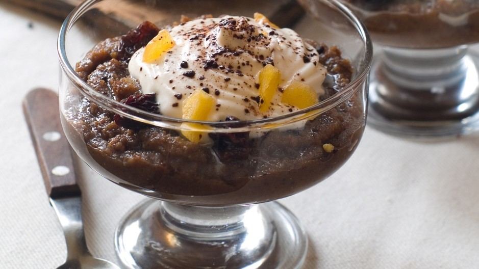

Beskrivning av receptet
I traditionellt lettiskt kök är rågbröd en viktig ingrediens. Tillsammans med andra häftklamrar som havre, kål och potatis kommer frekvent användning av rågbröd från landets tidigare bondekultur. Det är fortfarande som grund för många rätter - från populär pubmat till desserter. I synnerhet använder efterrätten som kallas maizes zupa rågbröd för att skapa en slags söt "soppa" som liknar en brödpudding.
Maizes zupa är ett utsökt sätt att använda rester av rågbröd eftersom det kokas i vatten på låg värme och infunderas med sötma från torkade frukter. Tillsatsen av kanel, kryddnejlika och lite brunt socker ökar rågens smakfulla smak. När det är klart, servera kallt och toppa med vispad grädde.
Refrenser:
- Receptet är taget ifrån denna länk och är översatt av webbplatsägaren.
Ingredienser
- 2/3 koppar gammalt rostat mörkt rågbröd
- 2 koppar kokande vatten
- 1/4 kopp socker
- 1/4 kopp brunt socker
- 2 msk. tranbärsjuicekoncentrat
- 1/3 kopp diverse torkad frukt (äpplen, russin, katrinplommon), finhackad
- Kanel
- Malda kryddnejlikor
- Vispgrädde
Gör så här:
- Förvärm ugnen till 175°C. Lägg rågbröd på en plåt och lägg den i ugnen tills det är lätt rostat och torrt.
- Riv brödet grovt eller använd en mixer för att omvandla brödet till smulor.
- Koka upp vatten i en liten såsgryta och blöt riven bröd i vatten tills det är mjukt.
- Rör i socker, kanel, kryddnejlika och frukt.
- Fortsätt laga under svag värme i cirka 30 minuter eller tills frukten och sockret har trängt igenom.
- Ta bort från värmen och rör i tranbärskoncentratet.
- Kyl det ner helt. Servera med lite vispgrädde på toppen.